Our Trips
Discover the adventure that awaits you on the river! Our rafting trips are designed to offer exciting and unforgettable experiences for everyone, from beginners and families to experienced adventurers. Each trip gives you the opportunity to explore beautiful natural landscapes, enjoy the thrill of the river, and create lasting memories with friends and loved ones. With experienced guides, quality safety equipment, and different adventure options available, you can choose the trip that best suits your interests and experience level. Get ready to paddle, have fun, and experience the excitement of white water rafting.
Rafting Trips
Colorado - Arkansas River Adventure
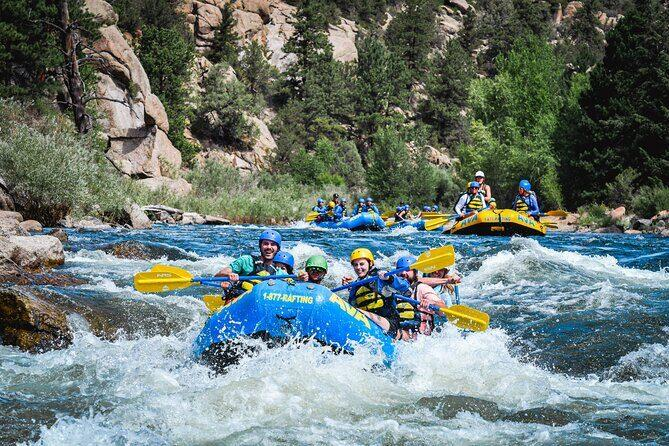
Location: Colorado, USA
River: Arkansas River
Area: Buena Vista / Browns Canyon
Type: Whitewater Rafting
Difficulty: Moderate to Challenging
Duration: Half Day or Full Day
Suitable for: Beginners with guides, families depending on the section, and experienced rafters
Scenery: Rocky Mountains, canyons, and beautiful mountain landscapes
Description:
Experience the excitement of rafting on the beautiful Arkansas River in Colorado. Paddle through exciting rapids while enjoying breathtaking views of the Rocky Mountains and surrounding canyons.
West Virginia - New River Adventure
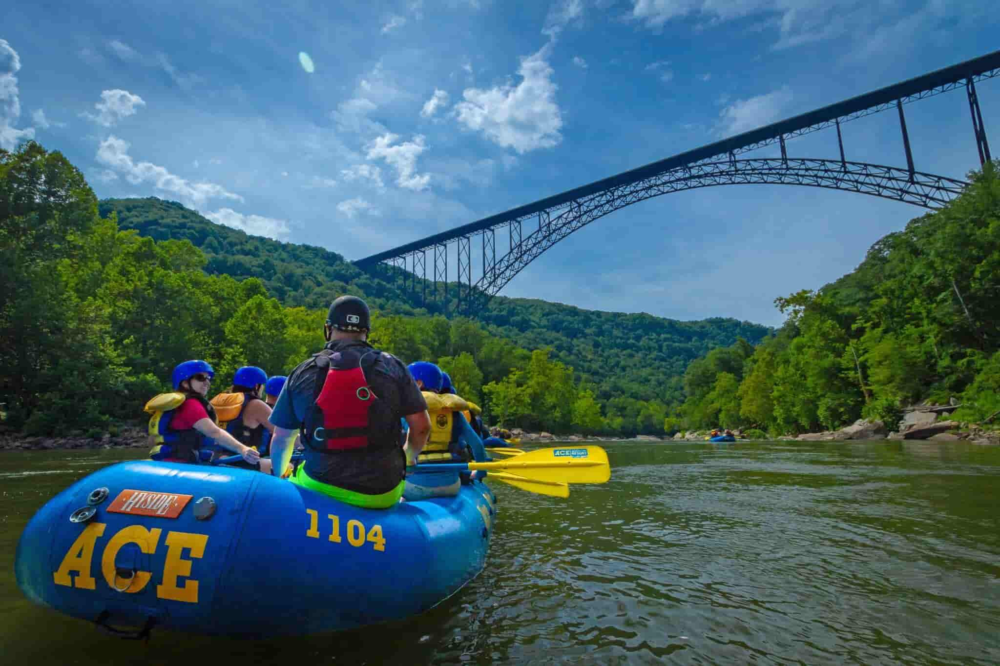
Location: West Virginia, USA
River: New River
Area: New River Gorge
Type: Whitewater Rafting
Difficulty: Class III-IV
Duration: Approximately 4-6 hours
Suitable for: Adventurous groups, beginners with experienced guides, and experienced rafters
Scenery: Deep gorges, cliffs, forests, and mountain landscapes
Description:
Explore the spectacular New River Gorge in West Virginia. Navigate exciting whitewater rapids while enjoying beautiful forests, towering cliffs, and breathtaking mountain scenery.
California - American River Expedition
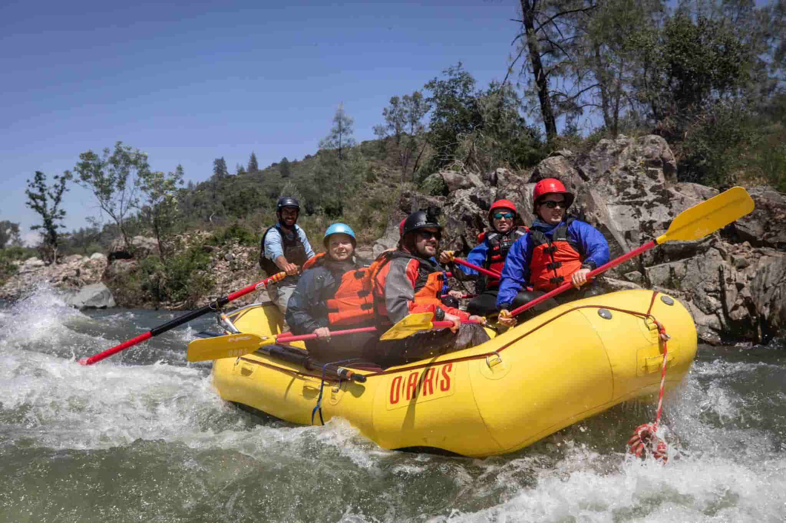
Location: California, USA
River: South Fork American River
Area: Coloma-Lotus, California
Type: Whitewater Rafting
Difficulty: Class II-III
Duration: Half Day or Full Day
Suitable for: Beginners, families, and groups
Scenery: Forests, rocky landscapes, river canyons, and exciting rapids
Description
Enjoy an unforgettable rafting adventure on California's South Fork American River. Work together with your team to navigate exciting rapids while discovering the beautiful natural scenery surrounding the river.
Oregon - Rogue River Trip
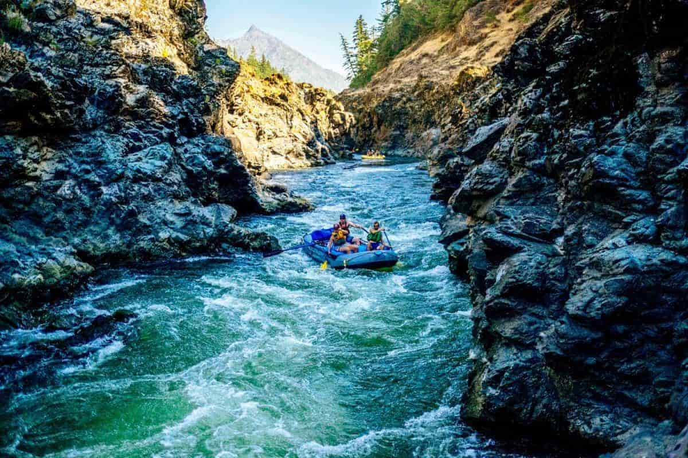
Location: Oregon, USA
River: Rogue River
Area: Rogue River Wilderness
Type: Whitewater and Wilderness Rafting
Difficulty: Moderate / Class III depending on the section
Duration: Several Hours to Several Days
Suitable for: Adventurers, groups, and people looking for a wilderness experience
Scenery: Forests, canyons, waterfalls, rapids, and beautiful wilderness
Description:
Discover the wild beauty of Oregon's Rogue River. Paddle through exciting rapids, explore scenic canyons, and enjoy an unforgettable journey surrounded by forests and untouched nature.
Equipments
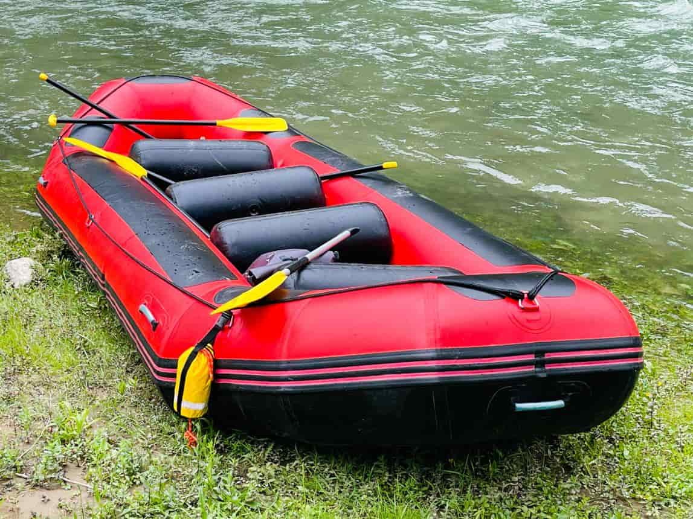
Name: Whitewater Raft
Description:
A strong inflatable raft designed to carry several people safely through river rapids.
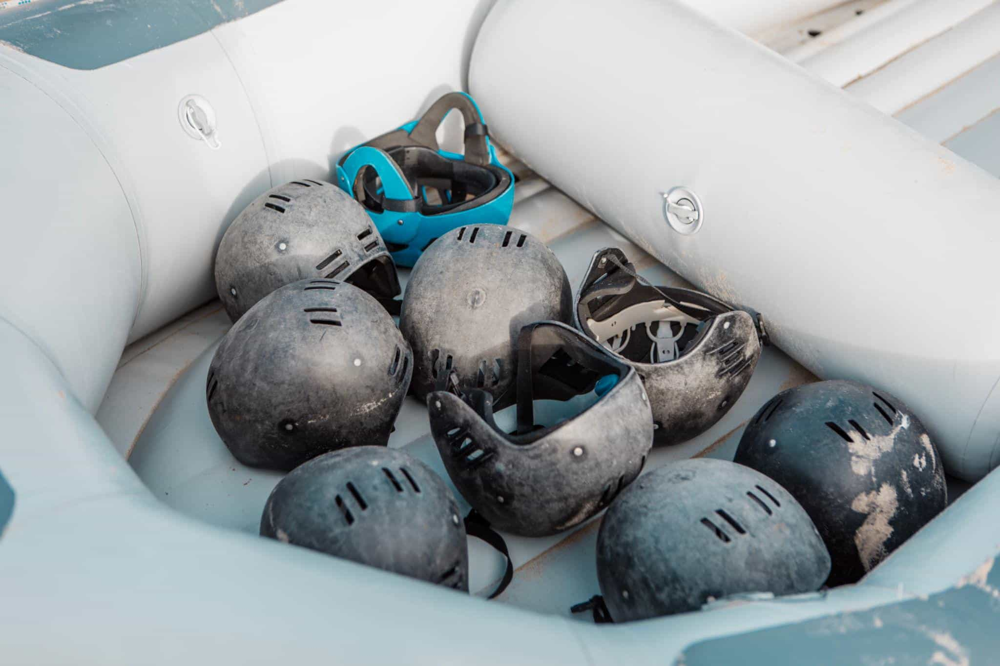
Name: Safety Helmet
Description:
A protective helmet that helps protect the head from rocks and other impacts while navigating the river.
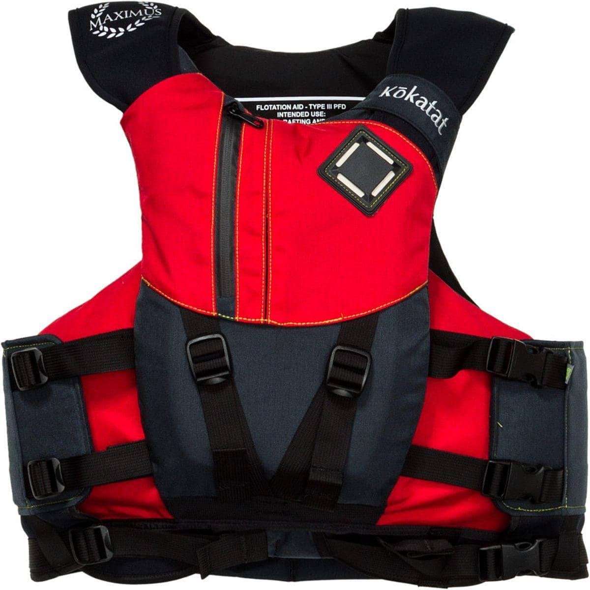
Name: Life Jacket (PFD)
Description:
A personal flotation device that helps keep rafters afloat and provides essential protection in the water.
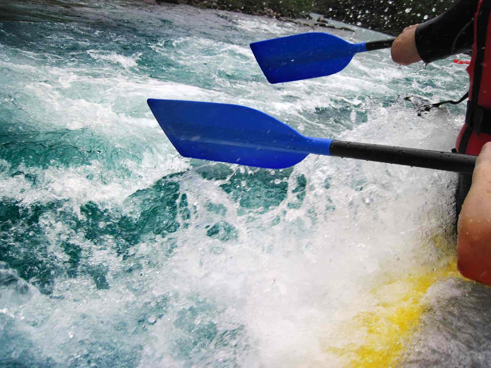
Name: Rafting Paddle
Description:
A lightweight paddle used by rafters to move the raft and help control its direction through the river.
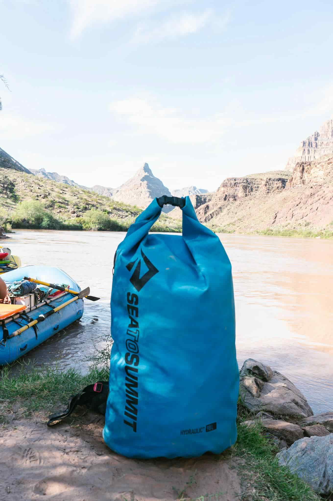
Name: Dry Bag
Description:
A waterproof bag used to protect personal belongings such as clothes, phones, and other items from water.
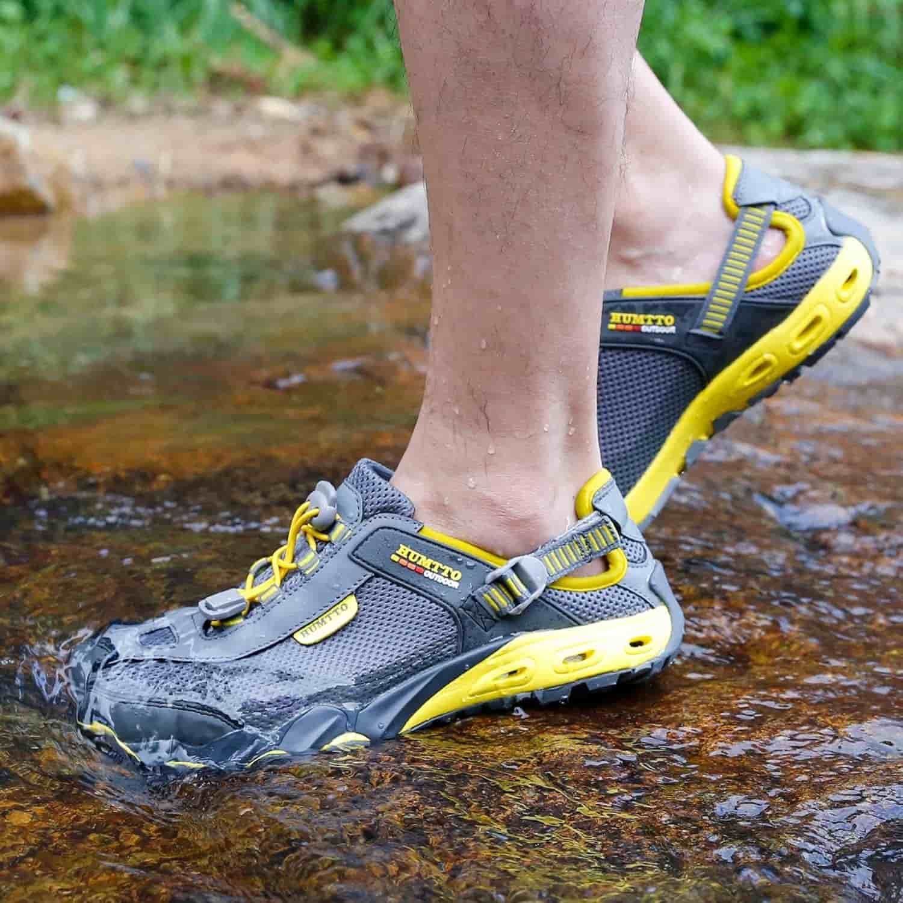
Name: Water Shoes
Description:
Protective shoes designed to provide comfort and grip while walking in and around the river.
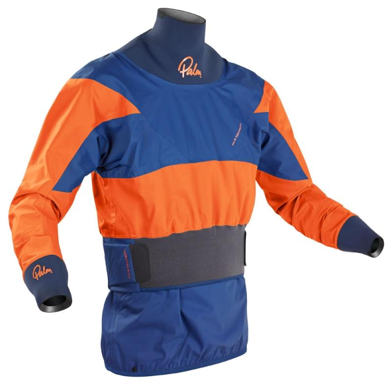
Name: Wetsuit / Splash Jacket
Description:
Protective clothing that helps keep rafters warm and comfortable when they are exposed to cold water.
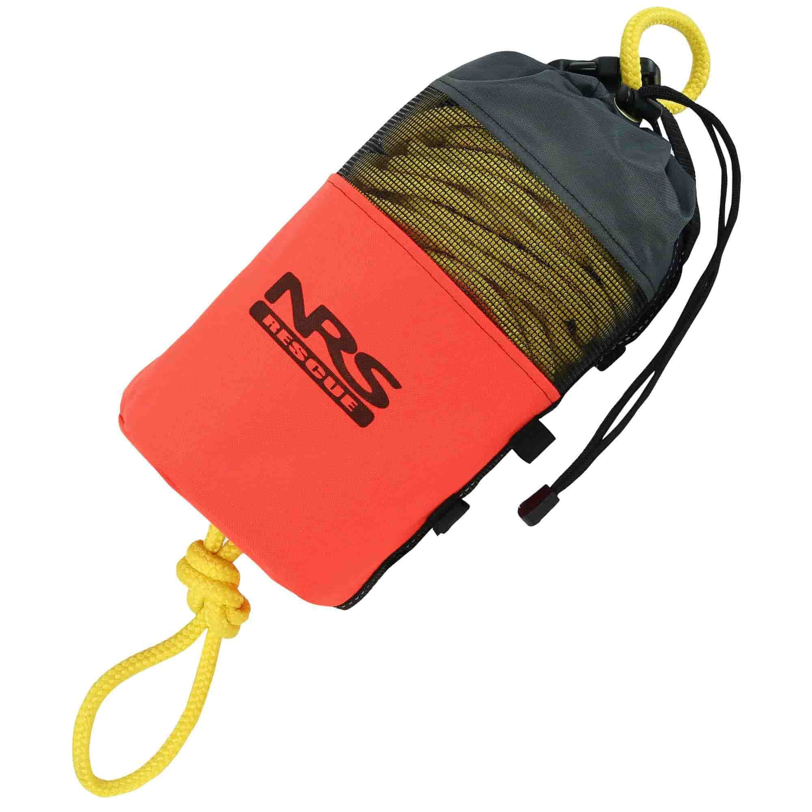
Name: Throw Bag
Description:
A rescue bag containing a rope that can be thrown to someone who needs assistance in the water.
What To Bring
Drinking Water
Bring enough drinking water to stay hydrated throughout your rafting adventure.
Extra Clothes
Bring a dry change of clothes because you may get completely wet during the rafting trip.
Water Shoes
Wear sturdy, closed-toe shoes or appropriate water shoes that provide good grip and protect your feet.
Sunscreen
Bring waterproof sunscreen to protect your skin from the sun while spending time on the river.
Sunglasses
Sunglasses can help protect your eyes from bright sunlight and water reflections.
Hat / Sun Hat
A lightweight hat can help protect your head and face from direct sunlight during the trip.
Dry Bag
Use a waterproof dry bag to protect personal belongings such as your phone, wallet, keys, and extra clothes from water.
Towel
Bring a towel so you can dry yourself after finishing your rafting adventure.
Snacks / Food
Bring snacks or food when appropriate for the length of your trip, and keep them in a secure container.
Phone in a Waterproof Case
If you want to bring your phone, protect it in a waterproof case or bag to keep it safe from water.
Ready for Your Next Adventure?
Choose your favorite rafting trip and get ready for an unforgettable adventure on the river. Our team is ready to help you enjoy a safe and exciting experience.
Book Your Trip